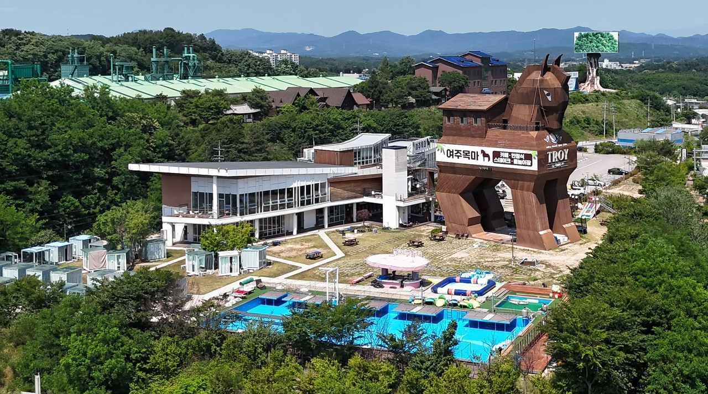
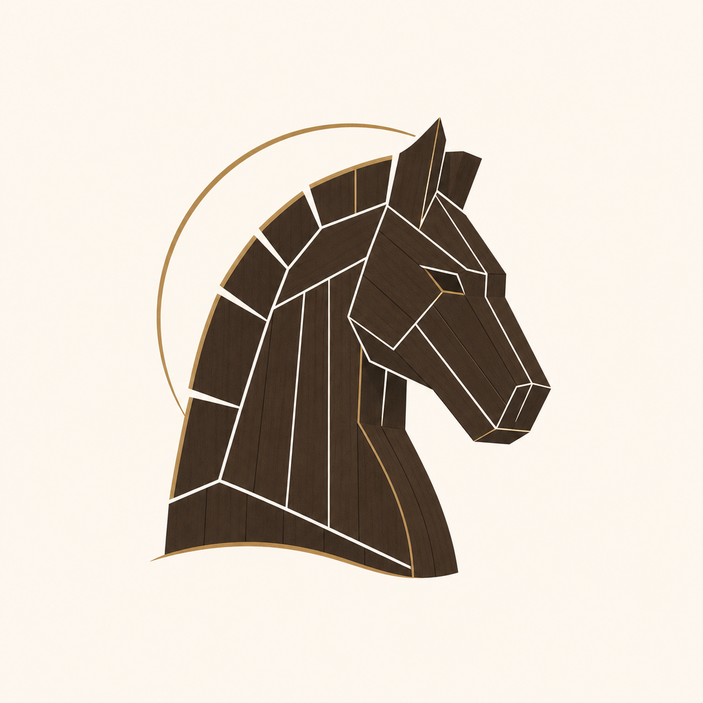
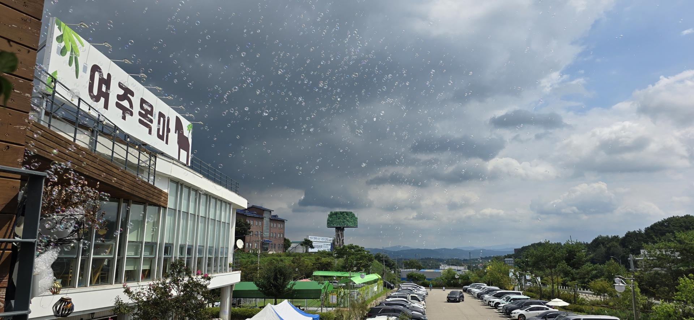

자가용
여주IC · 주차
영동고속도로 여주IC 하차 후 프리미엄 아울렛 방면. 단지 내 주차 가능합니다.

여주목마10:00–20:00월 휴무

길찾기
찾아오시는 길
여주 프리미엄 아울렛에서 차로 약 10분. 쇼핑을 마친 뒤 목마 포토·식사로 이어지는 여주 반나절 코스입니다. 영동고속도로 여주IC에서도 가깝습니다.
여주 프리미엄 아울렛 → 여주목마
쇼핑을 마친 뒤 목마 포토존·식사·휴식으로 이어지는 여주 나들이 동선입니다.
내비게이션에 여주목마 또는 명품로 142를 입력하세요.

자가용
영동고속도로 여주IC 하차 후 프리미엄 아울렛 방면. 단지 내 주차 가능합니다.
아울렛 동선
여주 프리미엄 아울렛에서 차로 약 10분. 쇼핑 후 목마 포토·식사·휴식을 이어서 즐기기 좋습니다. 내비게이션: 여주목마 / 명품로 142.